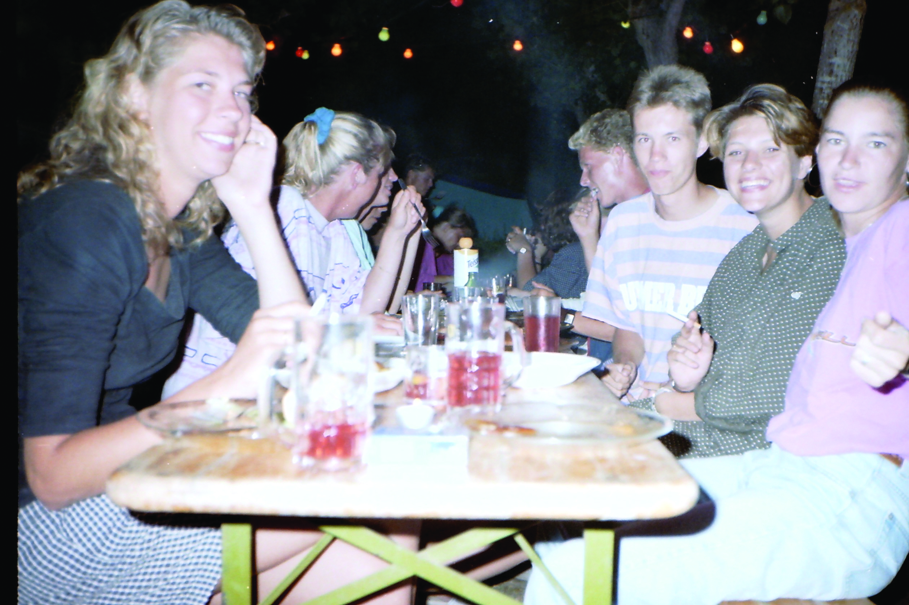
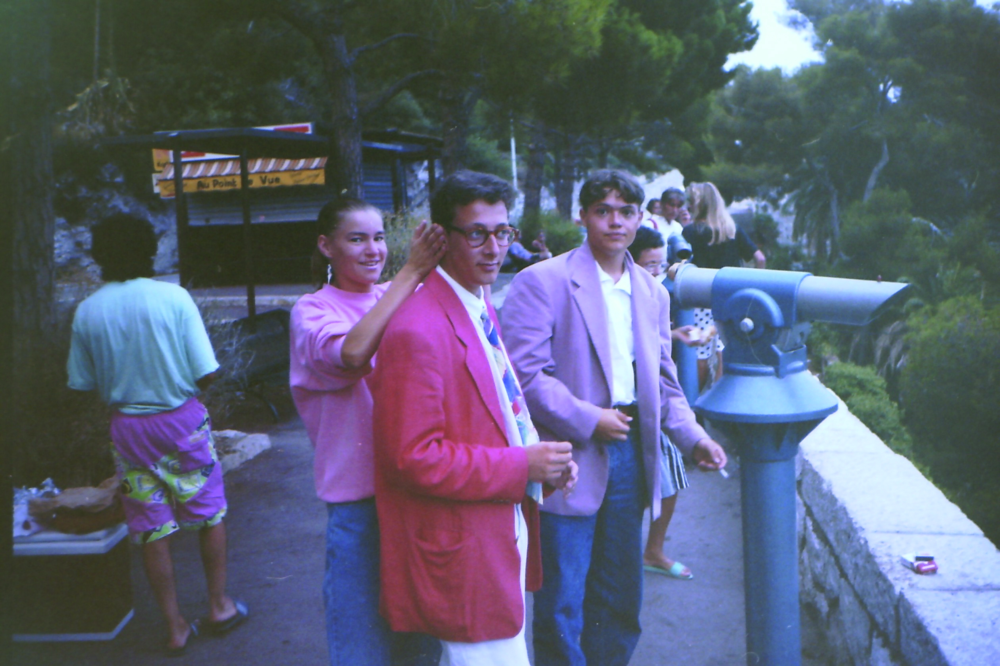
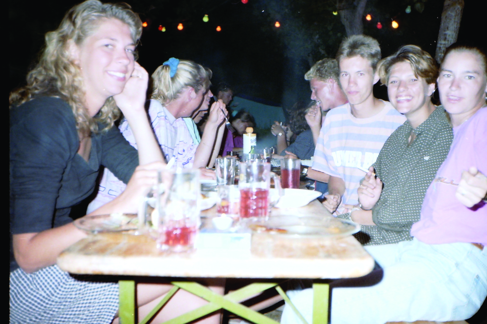
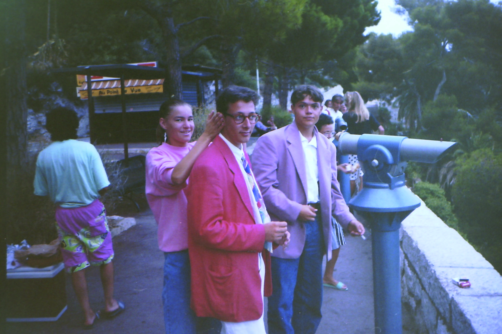

Responsible for the overall visual and conceptual direction, ensuring a cohesive design. This involved layout composition, typography selection, and visual storytelling to enhance readability and
aesthetic appeal.
Tools used: InDesign, Adobe Photoshop
Editor In Chief: Barbare Saikodze
Graphic designer: Vanesa Vrablova, Mees de Wilde, Freya Willems, Fleur van der Rijken
Feature editor: Barbare Saikodze, Vanesa Vrablova
Photo story editor: Mees de Wilde
Fiction story editor: Freya Willems
Illustrators: Freya Willems, Fleur van der Rijken
Production manager: Vanesa Vrablova
Administrative assistant: Fleur van der Rijken
Publishing manager: Freya Willems

See full Magazine
 


